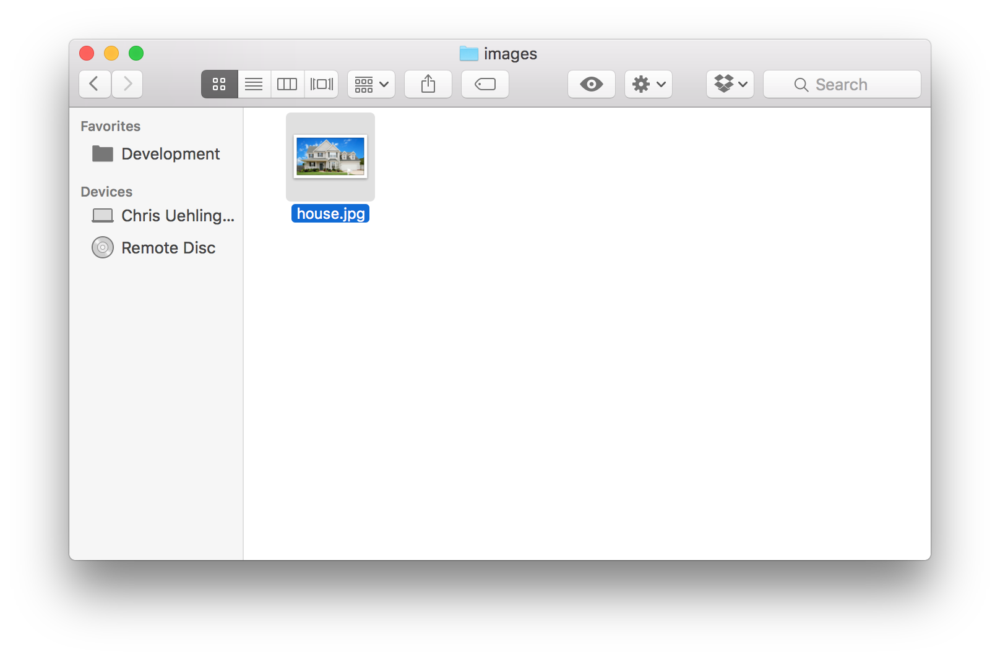

Intro to Web Servers
by Chris Uehlinger
Example Project:
git clone https://github.com/chrisuehlinger/static-site-example.git


Task Runners
Overview
- What a Web Server is
- How to start a server on your computer
- A simple development workflow using a web server
What is a server?
Server
Server
A Static Web Server
http://localhost:8080/index.html
<!DOCTYPE html>
<html>
<head>
<title>My Web Page</title>
<link rel="stylesheet" href="style.css" />
</head>
<body>
<h1>Hello World</h1>
<img src="images/house.jpg" />
</body>
</html>
http://localhost:8080/style.css
body {
font-family: Helvetica, Arial, sans-serif;
}
h1 {
color: dodgerblue;
}
img {
width: 300px;
}
http://localhost:8080/images/house.jpg

URLs
http
://
www.mysite.com
:80
/path/to/index.html
http
://
78.43.222.1
:80
/path/to/index.html
http
://
localhost
:8080
/path/to/index.html
- Protocol - How we will talk to each other (for websites, always http or https)
- Host - The name of the computer or server we're talking to
- Port - Which port on that computer are we talking to (80 by default)
- Path - The name of the file we are looking for
Heavyweight Production Servers
Lightweight Development Servers
If you're on a Mac:
python -m SimpleHTTPServer 8000If you have Node.js installed:
npm install -g http-server
http-server -p 8000Example Project:
git clone https://github.com/chrisuehlinger/static-site-example.gitDemo
Fire up a Terminal, go to the directory where we're keeping the site, type: http-server -p (some number)The Simple Static Workflow
- Make a folder and some HTML, CSS and JS files
- In the Terminal App (or cmd on Windows) go to that folder and set up a server
- Look at your page in the browser at http://localhost:[port]/index.html
- Change one of the files
- Refresh the page
- Go back to step 4, repeat until done
Some grease for this workflow
- Set up "Autosave" or "Save on Loss of Focus" in your favorite editor
- See if your editor has a "Compile on Save" plugin for Sass, LESS or other Preprocessors
- Use BrowserSync as your server, it will automatically refresh the page when you save:
npm install -g browser-sync
browser-sync start --server -p 8000 --files="./**/*"Demo with Three.js
Deploying your web site
- Awesome Free Host: GitHub Pages
- Free-ish hosts: surge.sh and now-static
- Free-ish Host-ish things: Amazon S3 and Dropbox Public Sites
- Learn FTP and copy your files to a server
Thanks for listening!
- @Uehreka on Twitter and Slack
- chrisuehlinger on GitHub
- chrisuehlinger.com